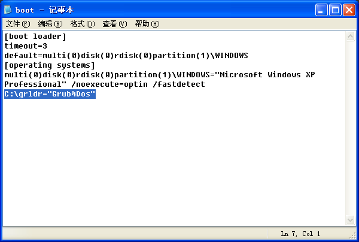
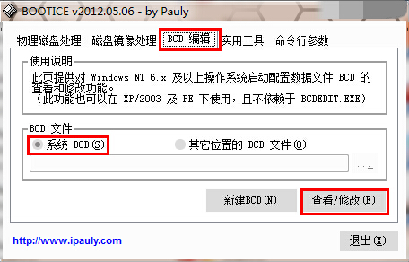
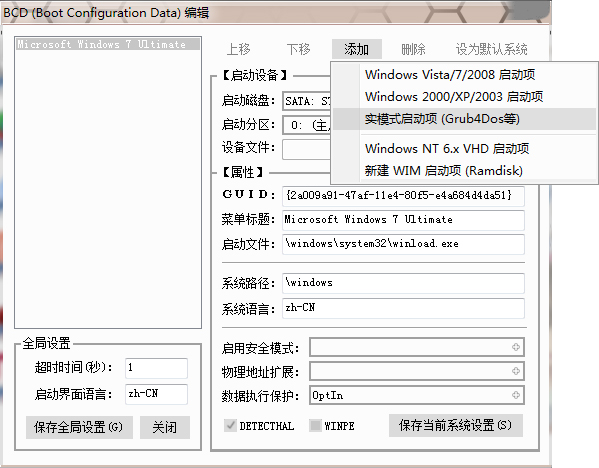
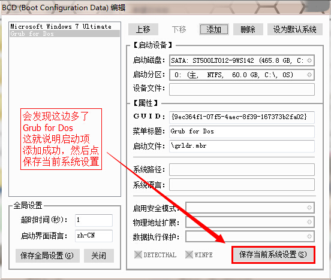
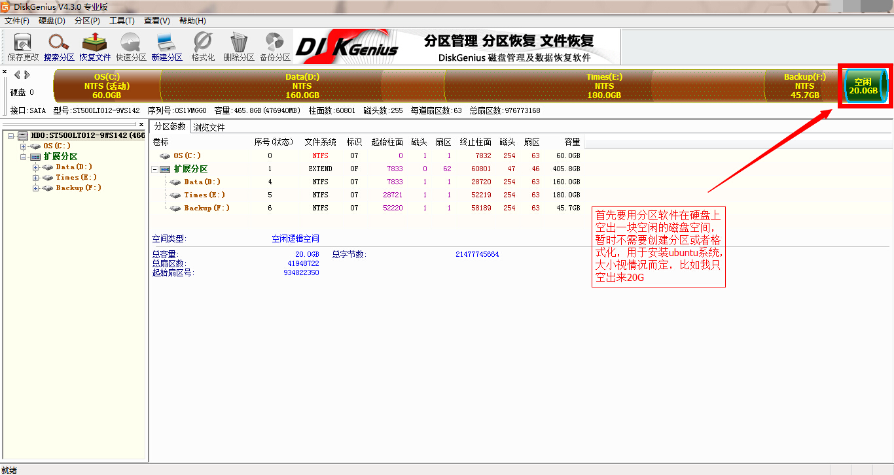
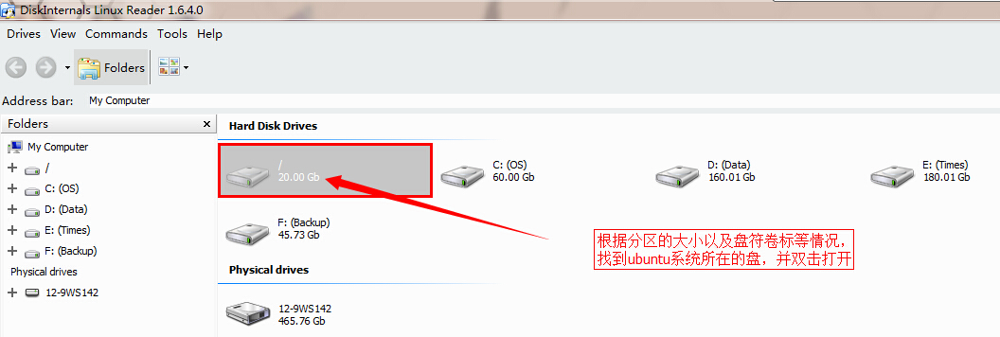
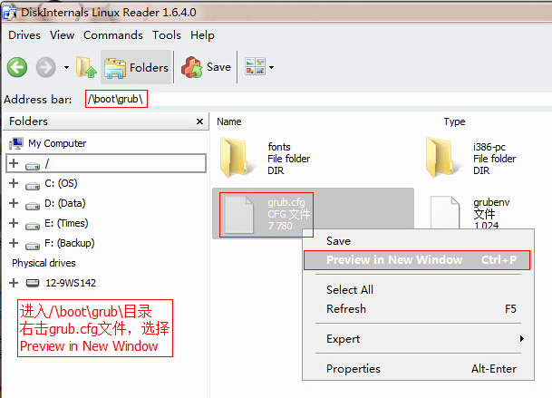

首先说一下，双系统并不会影响两个系统各自的速度。两个系统都是独立的，分别位于硬盘的不同位置，独立运行。也就是说，当一个系统在运行时，另一个系统只是储存在硬盘上的文件，这自然不会对系统的速度有影响。
另外，安装双系统是有好处的。需要看这篇文章的人即使不是linux的新手，那至少也是ubuntu的新手。那我建议，你还是装双系统的好。因为，linux系的软件什么的支持还不是很好，若不是高手的话，遇到问题往往无从下手。安装双系统的话，即使linux系统不能很快适应或者完美配置，那还能切回windows系统进行日常操作。
本教程适用于使用mbr分区硬盘
好了，下面开始正式解说已有windows系统，如何再安装ubuntu，构成双系统。自行备份文件，本文不讲述文件备份的过程。 假设已有的系统的系统盘为C，安装ubuntu 14.10 64位桌面版系统，安装方式为硬盘安装（这意味着你不需要制作启动U盘了，教程后也会给出启动U盘的制作方法）
1.下载ubuntu系统镜像
可以从官方网站下载，也可以从国内的镜像源下载，点不同的日期，就能下载对应的发行版。如当前最新的ubuntu 14.10，就点击14.10这个目录，然后就看到各个版本的镜像，一般的，我们下载名称如ubuntu-14.10-desktop-amd64.iso的64位桌面版镜像文件，或者名称如ubuntu-14.10-desktop-i386.iso的32位桌面版镜像文件
这是官方镜像站
http://releases.ubuntu.com
这是国内镜像站
http://mirrors.163.com/ubuntu-releases
http://mirrors.ustc.edu.cn/ubuntu-releases
比如我这次是下载的网易镜像源的文件
http://mirrors.163.com/ubuntu-releases/14.10/ubuntu-14.10-desktop-amd64.iso
复制ubuntu所需要的安装文件
用压缩软件打开下载的系统镜像文件ubuntu-14.10-desktop-amd64.iso，把其中的casper文件夹解压到c:\
创建grub4dos引导
复制grub4dos引导所需要的文件gldr gldr.mbr menu.lst到C盘根目录
打开menu.lst（可以用windows自带的记事本notepad.exe打开）并将文件内容替换成以下代码
default 0
timeout 3
#引导Ubuntu系统#
#title Ubuntu 14.10
#root (hd0,7)
#kernel /boot/vmlinuz-3.16.0-23-generic root=UUID=eb3a4ffb-db80-42d4-a206-5c91fa0f5b28 ro quiet splash $vt_handoff
#initrd /boot/initrd.img-3.16.0-23-generic
#引导安装Ubuntu系统#
#操作方法，将Ubuntu的iso镜像文件中的casper文件夹解压到C盘根目录
#注意64位操作系统vmlinuz.efi有.efi后缀，32位没有后缀（简单的方法就是去看casper文件夹下的文件是vmlinuz还是vmlinuz.efi）
title Install Ubuntu
find --set-root /casper/vmlinuz.efi
kernel /casper/vmlinuz.efi boot=casper ro ignore_uuid
initrd /casper/initrd.lz
#引导硬盘上的Win系统#
title Microsoft Windows 7 Ultimate
root (hd0,0)
chainloader +1
接下来的引导创建步骤要分两种
①WinXP
右击“我的电脑”选择“属性”，然后选择“高级”标签，然后点“启动和故障恢复”选项中的“设置”按钮，接着点击“编辑”。此时会打开一个文本文件，在文本文件的末尾添加一行，并添加代码C:\grldr="Grub4Dos"



[boot loader]
timeout=3
default=multi(0)disk(0)rdisk(0)partition(1)\WINDOWS
[operating systems]
multi(0)disk(0)rdisk(0)partition(1)\WINDOWS="Microsoft Windows XP Professional" /noexecute=optin /fastdetect
C:\grldr="Grub4Dos"
②Win7/Win8
运行bootice.exe然后按下图提示操作，打开“BCD编辑”标签，再选择“系统BCD”，接着点“查看/修改”。

在新的窗口中点击右上方的“添加”，然后选择“实模式启动项（Grub4dos等）”，然后点右下角的“保存当前系统设置”


4.给ubuntu系统留出足够的空闲磁盘空间
用无损分区软件如Diskgenius给ubuntu系统腾出一块空闲磁盘空间，暂时不需要创建分区

5.确定一下图片中的文件都有。确认无误重启系统，选择启动项的时候选择“Grub4dos”

至此，就能进入ubuntu的预操作环境了，跟windows的pe系统类似，点击桌面上的Install运行系统安装程序
此处略过系统的部分安装步骤，主要是配置什么的，自己摸索吧，很简单。
这里重点讲一下安装过程的分区过程。
如下图，先单击之前空出来的空闲磁盘空间，然后单击左下方的“+”，创建新的分区，并分配挂载点。安装系统的话，至少要分配/挂载点，相当于系统盘目录。如图所示。如果还要分配/home（相当于windows“我的文档”目录）等其他挂载点，那就要调节上面的“大小”值，并在下面挂载相应的挂载点。

另外，安装启动引导器的设备这一项可以保持默认。这样，系统的引导会替换成grub引导，并同时生成ubuntu以及windows的引导。如果仍然想用windows的引导，请把这边选成ubuntu系统所安装的那个盘。确认无误，点击“现在安装”。因为没有分“swap”分区，安装器会提示，不过没关系，忽略即可。（本文保留默认设置） 然后还有一部分配置内容，很简单，就不赘述了。安装完成后，系统会提示是否继续体验系统，还是重启。此时选择重启就行了。 对于“安装启动引导器的设备”这一项保留了默认值的，重启后就能进入刚刚安装的ubuntu系统了。 “安装启动引导器的设备”选择了ubuntu系统的分区，或者保留了默认值，想换回windows的引导器的情况，请继续往下看 重启时重启到windows的系统，如果windows的引导器被替换了的要先在WinPE系统中修复windows引导。
重启到windows分区后，先打开bootice.exe查看原来的grub4dos引导项还在不在，如果不在的话，按照上文方法重新创建，如果在的话，则进行下一步。 打开Diskgenius，找到ubuntu分区的序号并记住，比如我的是7，如下图所示

打开LinuxReader.exe，根据容量、盘符、卷标等信息，找到ubuntu所在的盘

然后打开，进入/boot/grub/目录，右击grub.cfg文件，选择“Preview in New Window”

找到menuentry 'Ubuntu'所在的行

将隔几行下面linux以及initrd后面的文字复制到menu.lst的kernel以及initrd后面，并去掉对应位置前面的#
下图红框root (hd0,7)中的7就是刚刚在Diskgenius中看的序号

至此，保存，重启时进入Grub4dos启动项就可以进入ubuntu系统了